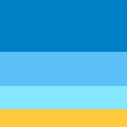
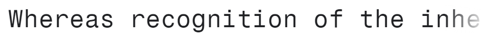
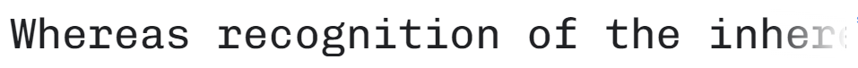
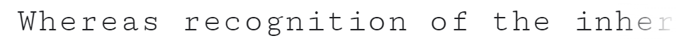

Color Schema

#0081C9 Will be used for header and footer.
#5BC0F8 Will be used for tha main section
#86E5FF Will be used for contrast, shadows, buttons.
#FFC93C Will be usde if aditional contras is needed
Typography
For the main section, font-family Fragment Mono monospace will be used; while 'Chivo Mono'  and 'Cutive Mono',  would be used if aditional fonts are required.